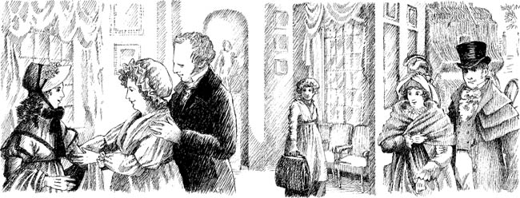

Listen to Part 1:

Catherine đến Bath
Tháng 1 năm 1802. Cô Catherine Morland vô cùng phấn khích. Cô sắp đến nghỉ tại thành phố Bath trong sáu tuần. Cô sẽ đến thăm nhà những người bạn của mình, ông và bà Allen.
Bà Allen nói: "Bath là một thành phố xinh đẹp. Chúng ta sẽ có một thời gian thực sự vui vẻ ở đó, Catherine. Những người có địa vị cao nhất trong xã hội sẽ ở đó. Chúng ta sẽ đi khiêu vũ và xem kịch".
Catherine tự hỏi: "Liệu mình có gặp được một anh chàng trẻ đẹp trai nào không?".

Catherine Morland mười bảy tuổi. Cô là một cô gái khỏe mạnh, vui vẻ. Cô có thân hình mảnh mai với mái tóc đen xoăn. Cô sống cùng gia đình tại ngôi làng Fullerton. Cha cô là mục sư của nhà thờ.

Đến ngày lên đường. Catherine xếp quần áo vào những chiếc va li bằng da. Mẹ cô giúp cô.
Listen to Part 2:
Bà Morland nói: "Con nhớ mang theo một số quần áo ấm nhé. Ban đêm sẽ rất lạnh!".
Cuối cùng cũng sắp xếp xong. Ông Morland đưa cho con gái một ít tiền. Catherine lên chiếc xe ngựa của gia đình Allen. Cô tạm biệt gia đình rồi bắt đầu hành trình đến Bath!
Mục lục
- Trang tiêu đề
- Trang bản quyền
- Mục lục
- Lưu ý về tác giả
- Lưu ý về câu chuyện này
- Những người trong câu chuyện này
- 1 Catherine đến Bath
- 2 Những người bạn mới của Catherine
- 3 John và James
- 4 Một vũ hội tại Phòng trên
- 5 'Tại sao anh lại nói dối em?'
- 6 Catherine và gia đình Tilney
- 7 Isabella đang yêu
- 8 Đội trưởng Frederick Tilney
- 9 Isabella và James
- 10 Tu viện Northanger
- 11 'Cô Morland thân mến của tôi!'
- 12 Một chuyến thăm đến Woodston
- 13 Một lá thư từ Isabella
- 14 Catherine về nhà
- 15 'Em sẽ lấy anh chứ?'